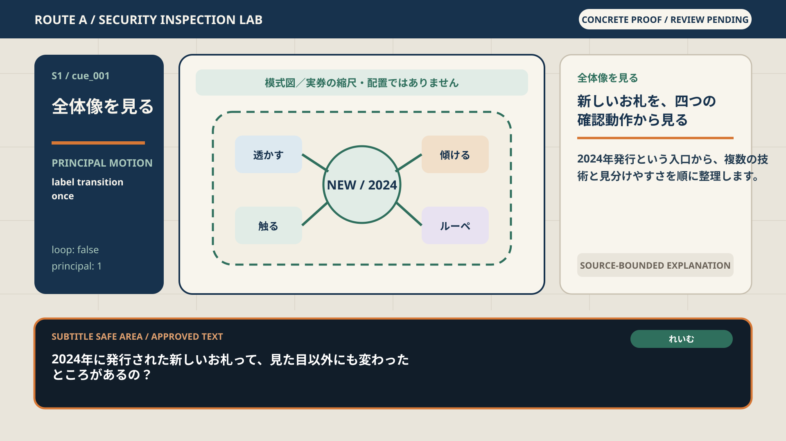
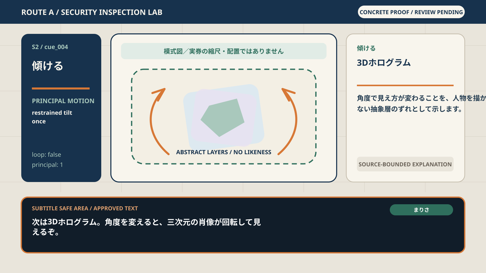
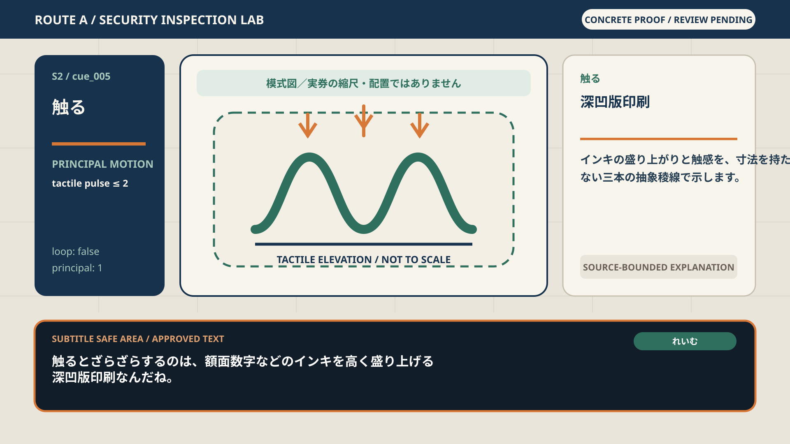
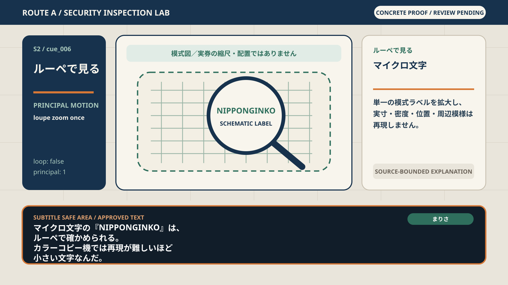
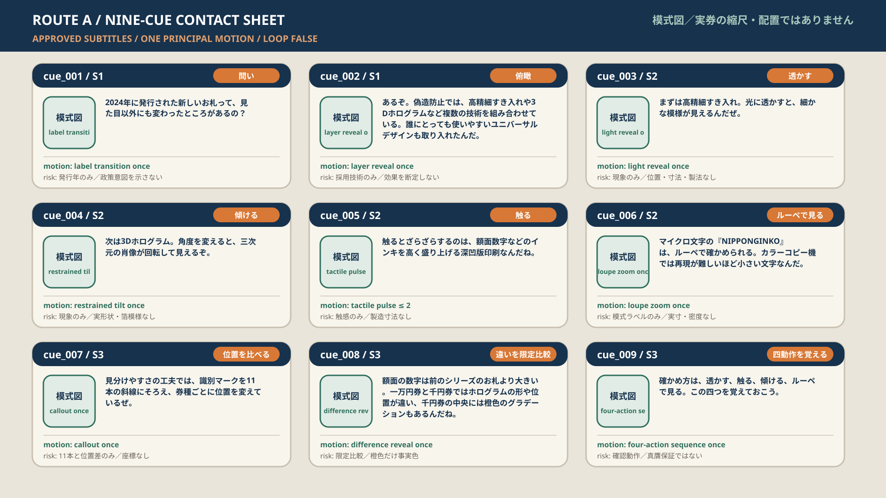
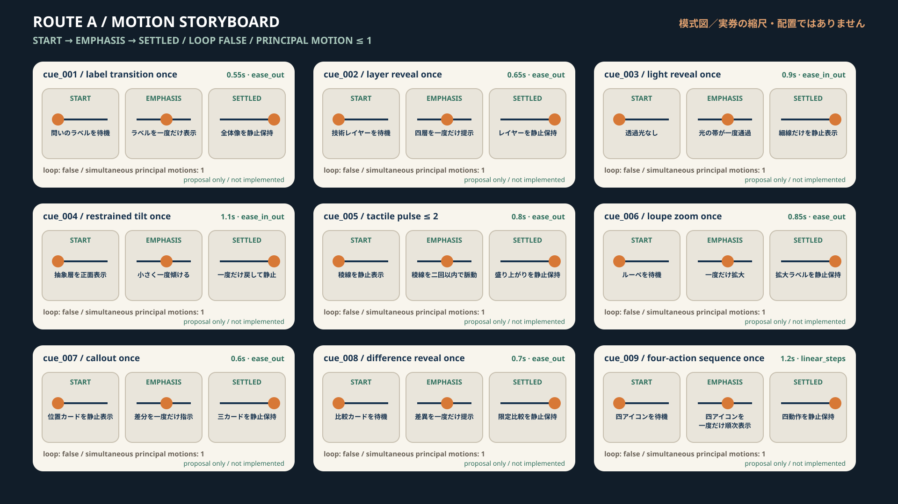

ROUTE A / SECURITY INSPECTION LAB
新紙幣を、抽象的な検査台で読み解く
低精細conceptを、直接見られる1920×1080 keyframe、9 cue contact sheet、非loop motion storyboardへ具体化したhuman review packageです。
6 full-frame keyframes9/9 cuessubtitle-safeloop false
模式図／実券の縮尺・配置ではありません
Authorization boundary
approved 9 cue text/order、S1/S2/S3 2/4/3、speaker 3/6、claims、evidence edges、canonical/derived CSVは変更していません。すべてoriginal abstract geometryで、real portrait、seal、serial number、official security pattern、exact feature placementを使いません。
Six full-frame keyframes



Nine-cue coverage

Motion: start → emphasis → settled
各cueのprincipal motionは最大1、continuous loopはありません。これはproposal-only storyboardで、実装結果や再生品質の証明ではありません。

Human review gate
次はA/B/Cを選び直さず、このproofを四つの質問で確認します。
四問のreview sheetを開く · direction selection receipt · machine readback